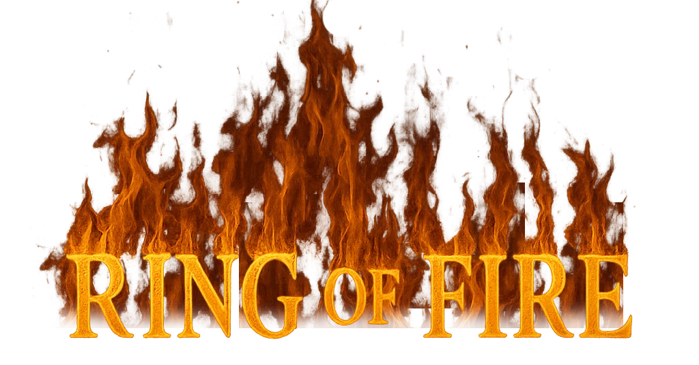
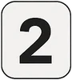
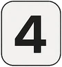

Regler

Is you – välj någon som måste dricka.- Is me – du själv dricker.

Is whore – alla tjejer dricker.- Is thumbmaster – sätt tummen på bordet, sist dricker.
- Is dicks – alla killar dricker.
- Is heaven – peka mot himlen, sist dricker.
- Is mate – välj en kompis som dricker varje gång du dricker.
- Is rhyme – börja ett rim, förloraren dricker.
- Is category – välj kategori, förloraren dricker.
- Is rule – hitta på en ny regel som gäller resten av spelet.
- Is question master – om någon svarar på din fråga måste de dricka.
- Häll i muggen, den som drar sista kungen eller bryter cirkeln dricker allt.
- "Waterfall" – alla börjar dricka, ingen får sluta förrän personen före dem gör det.